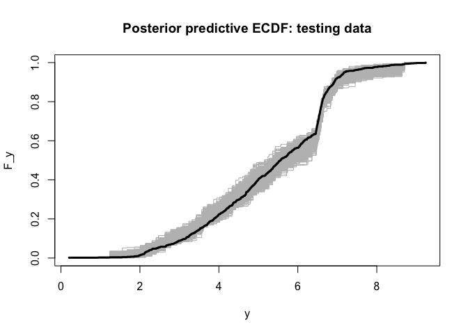
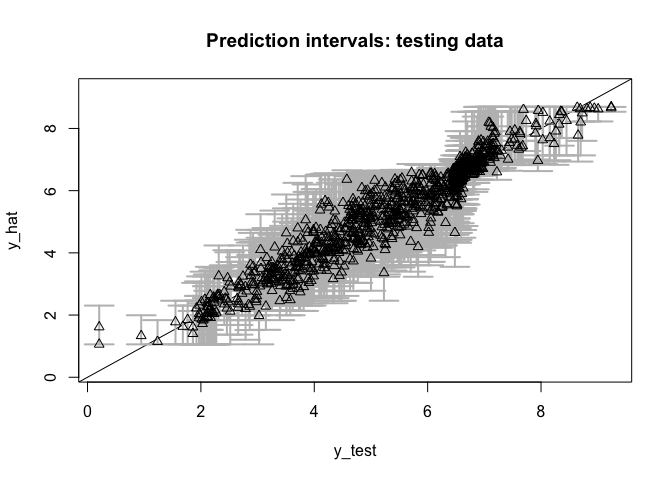
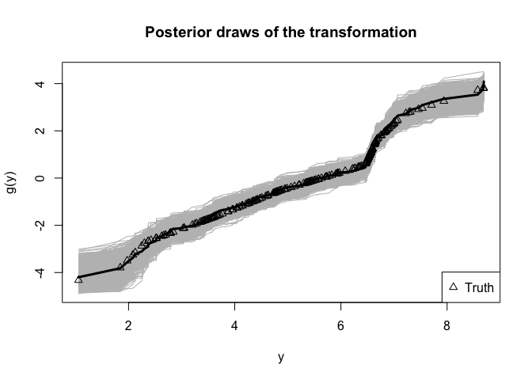
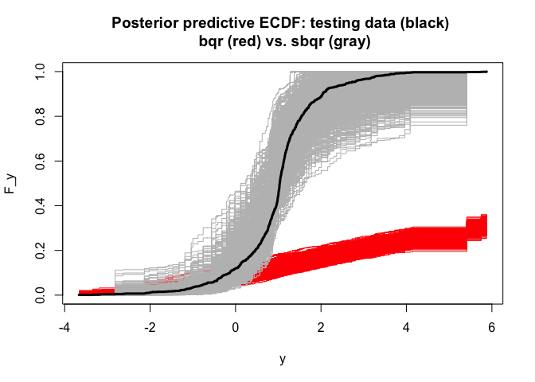
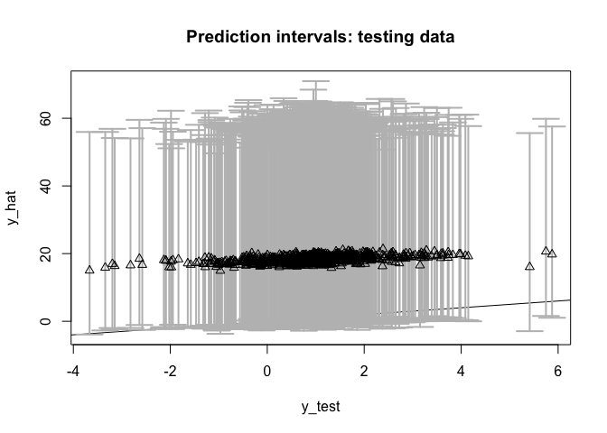
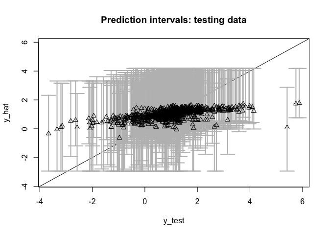
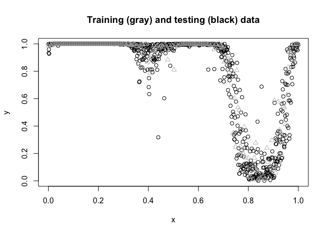
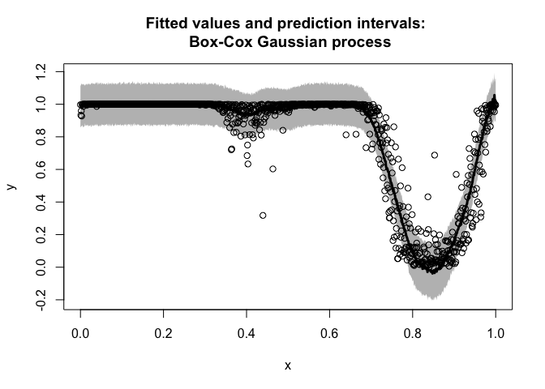
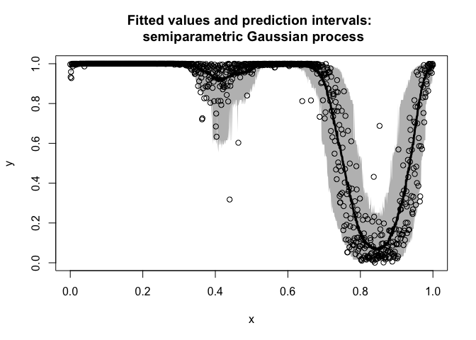

Background: semiparametric regression via data transformations
Data transformations are a useful companion for parametric regression models. A well-chosen or learned transformation can greatly enhance the applicability of a given model, especially for data with irregular marginal features (e.g., multimodality, skewness) or various data domains (e.g., real-valued, positive, or compactly-supported data).
We are interested in providing fully Bayesian inference for semiparametric regression models that incorporate (1) an unknown data transformation and (2) a useful parametric regression model. For paired data {xi, yi}i = 1n with xi ∈ ℝp and y ∈ 𝒴 ⊆ ℝ, consider the following class of models: Here, g is a (monotone increasing) data transformation to be learned, while PZ ∣ θ, X may be considered the core parametric regression model indexed by unknown parameters θ.
Examples. We focus on the following important special cases of :
The linear model is a natural starting point: The transformation broadens the applicability of this useful class of models, including for positive or compactly-supported data (see below), while corresponds to PZ ∣ θ, X = x = N(x′θ,σϵ2).
The quantile regression model replaces the Gaussian assumption in with an asymmetric Laplace distribution (ALD) to target the τth quantile of z at x, or equivalently, the g−1(τ)th quantile of y at x. The ALD is quite often a very poor model for real data, especially when τ is near zero or one. The transformation offers a pathway to significantly improve the model adequacy, while still targeting the desired quantile of the data.
The Gaussian process (GP) model generalizes to include a nonparametric regression function, where fθ is a GP and θ parameterizes the mean and covariance functions. Although GPs offer substantial flexibility for the regression function fθ, the model may be inadequate when the y has irregular marginal features or a restricted domain (e.g., positive or compact).
Challenges: The goal is to provide fully Bayesian posterior inference for the unknowns (g,θ) and posterior predictive inference for future/unobserved data ỹ(x). We seek a model and algorithm that provide both (i) flexible modeling of g and (ii) efficient posterior and predictive computations.
Innovations: We specify a nonparametric model for g, yet also provide Monte Carlo (not MCMC) sampling for the target posterior and predictive distributions. As a result, we control the approximation accuracy via the number of simulations, but do not require the lengthy runs, burn-in periods, convergence diagnostics, or inefficiency factors that accompany MCMC.
Using
The package includes the following main functions:
: Monte Carlo sampling for posterior and predictive inference with the semiparametric Bayesian linear model –;
: Monte Carlo sampling for posterior and predictive inference with the semiparametric Bayesian spline model, which replaces with a spline for nonlinear modeling of x ∈ ℝ;
: blocked Gibbs sampling for posterior and predictive inference with the semiparametric Bayesian quantile regression, which replaces the Gaussian distribution in with an ALD to target the τth quantile of the data; and
: Monte Carlo sampling for predictive inference with the semiparametric Bayesian Gaussian process model – and .
Each function returns a point estimate of θ (), posterior samples of the transformation g (), and posterior predictive samples of ỹ(x) at some specified testing points Xtest (), as well as other function-specific quantities (e.g., posterior draws of θ, ).
Note: The package also includes Box-Cox variants of these functions, i.e., restricting g to the (signed) Box-Cox parametric family g(t;λ) = {sign(t)|t|λ − 1}/λ with known or unknown λ. The parametric transformation is less flexible, especially for irregular marginals or restricted domains, and requires MCMC sampling. These functions (e.g., , etc.) are primarily for benchmarking.
Semiparametric Bayesian linear models with
We simulate data from –:
# Simulate data from a transformed linear model:
dat = simulate_tlm(n = 200, # number of observations
p = 10, # number of covariates
g_type = 'step' # type of transformation (here, positive data)
)
# Training data:
y = dat$y; X = dat$X
# Testing data:
y_test = dat$y_test; X_test = dat$X_test quickly produces Monte Carlo samples of (θ,g,ỹ(Xtest)) under the semiparametric Bayesian linear model –:
# Fit the semiparametric Bayesian linear model:
fit = sblm(y = y,
X = X,
X_test = X_test)## [1] "7 seconds remaining"
## [1] "6 seconds remaining"
## [1] "3 seconds remaining"
## [1] "Total time: 8 seconds"
names(fit) # what is returned## [1] "coefficients" "post_theta" "post_ytilde" "post_g"
## [5] "model" "y" "X" "X_test"
## [9] "psi" "approx_g" "sigma_epsilon"These are Monte Carlo (not MCMC) samples, so we do not require further algorithm diagnostics.
First, we check for model adequacy using posterior predictive diagnostics. Specifically, we compute the empirical CDF on both and each simulated testing predictive dataset from .
# Posterior predictive checks on testing data: empirical CDF
# Construct a plot w/ the unique testing values:
y0 = sort(unique(y_test))
plot(y0, y0, type='n', ylim = c(0,1),
xlab='y', ylab='F_y', main = 'Posterior predictive ECDF: testing data')
# Add the ECDF of each simulated predictive dataset
temp = sapply(1:nrow(fit$post_ytilde), function(s)
lines(y0, ecdf(fit$post_ytilde[s,])(y0),
col='gray', type ='s'))
# Add the ECDF for the observed testing data
lines(y0, ecdf(y_test)(y0), # ECDF of testing data
col='black', type = 's', lwd = 3)
Despite the challenging features of this marginal distribution, the proposed model appears to be adequate.
Remark: Posterior predictive diagnostics do not require training/testing splits and are typically performed in-sample. If is left unspecified in , then the posterior predictive draws are given at and can be compared to . Naturally, the out-of-sample diagnostics above offer a more rigorous check.
Next, we evaluate the predictive ability on the testing dataset by computing and plotting the out-of-sample prediction intervals at and comparing them to :
# Evaluate posterior predictive means and intervals on the testing data:
plot_pptest(fit$post_ytilde,
y_test,
alpha_level = 0.10) # coverage should be >= 90% 
## [1] 0.929The out-of-sample predictive distributions are well-calibrated.
Finally, we summarize the posterior inference for the transformation g and the regression coefficients θ and compare to the ground truth values:
# Summarize the transformation:
# post_g contains draws of g evaluated at the sorted and unique y-values:
y0 = sort(unique(y))
# Construct a plot:
plot(y0, fit$post_g[1,], type='n', ylim = range(fit$post_g),
xlab = 'y', ylab = 'g(y)', main = "Posterior draws of the transformation")
# Add the posterior draws of g:
temp = sapply(1:nrow(fit$post_g), function(s)
lines(y0, fit$post_g[s,], col='gray')) # posterior draws
# Add the posterior mean of g:
lines(y0, colMeans(fit$post_g), lwd = 3) # posterior mean
# Add the true transformation, rescaled for easier comparisons:
lines(y,
scale(dat$g_true)*sd(colMeans(fit$post_g)) + mean(colMeans(fit$post_g)),
type='p', pch=2)
legend('bottomright', c('Truth'), pch = 2) # annotate the true transformation
# Check: correlation with true coefficients
cor(dat$beta_true[-1],
coef(fit)[-1]) # excluding the intercept## [1] 0.9431343The posterior distribution of g accurately matches the true transformation. The regression coefficients are also recovered.
Remark: The location-scale of the data-generating process and model – may not match exactly. Thus, we use correlations to compare the regression coefficients θ (while omitting the intercept) and apply location-scale shifts of the transformations g to ensure comparability. This is only a byproduct of the simulated data setting and does not matter for real data analysis.
Note: Try repeating this exercise with in place of . The Box-Cox transformation cannot recover the transformation accurately, the model diagnostics are alarming, and the predictions deteriorate substantially.
Semiparametric Bayesian quantile regression with
We now consider Bayesian quantile regression, which specifies a linear model for with ALD errors. First, we simulate data from a heteroskedastic linear model. Heteroskedasticity often produces conclusions that differ from traditional mean regression. Here, we do not include a transformation, so the data-generating process does not implicitly favor our approach over traditional Bayesian quantile regression (i.e., with g(t) = t the identity).
# Simulate data from a heteroskedastic linear model (no transformation):
dat = simulate_tlm(n = 200, # number of observations
p = 10, # number of covariates
g_type = 'box-cox', lambda = 1, # no transformation
heterosked = TRUE # heteroskedastic errors
)
# Training data:
y = dat$y; X = dat$X
# Testing data:
y_test = dat$y_test; X_test = dat$X_test Now, we fit two Bayesian quantile regression models: the traditional version without a transformation () and the proposed alternative via – (). We target the τ = 0.05 quantile.
# Quantile to target:
tau = 0.05
# (Traditional) Bayesian quantile regression:
fit_bqr = bqr(y = y,
X = X,
tau = tau,
X_test = X_test,
verbose = FALSE # omit printout
)
# Semiparametric Bayesian quantile regression:
fit = sbqr(y = y,
X = X,
tau = tau,
X_test = X_test,
verbose = FALSE # omit printout
)
names(fit) # what is returned## [1] "coefficients" "fitted.values" "post_theta" "post_ytilde"
## [5] "post_qtau" "post_g" "model" "y"
## [9] "X" "X_test" "psi" "approx_g"
## [13] "tau"For both model fits, we evaluate the same posterior predictive diagnostics as before. Specifically, we compute the empirical CDF on both and each simulated testing predictive dataset from .
# Posterior predictive checks on testing data: empirical CDF
# Construct a plot w/ the unique testing values:
y0 = sort(unique(y_test))
plot(y0, y0, type='n', ylim = c(0,1),
xlab='y', ylab='F_y',
main = 'Posterior predictive ECDF: testing data (black) \n bqr (red) vs. sbqr (gray)')
# Add the ECDF of each simulated predictive (bqr) dataset
temp = sapply(1:nrow(fit_bqr$post_ytilde), function(s)
lines(y0, ecdf(fit_bqr$post_ytilde[s,])(y0),
col='red', type ='s'))
# Same, for sbqr:
temp = sapply(1:nrow(fit$post_ytilde), function(s)
lines(y0, ecdf(fit$post_ytilde[s,])(y0),
col='gray', type ='s'))
# Add the ECDF for the observed testing data
lines(y0, ecdf(y_test)(y0), # ECDF of testing data
col='black', type = 's', lwd = 3)
Without the transformation, the Bayesian quantile regression model is not a good model for the data. The learned transformation completely resolves this model inadequacy—even though there was no transformation present in the data-generating process.
Finally, we can asses the quantile estimates on the testing data. First, consider :
# Quantile point estimates:
q_hat_bqr = fitted(fit_bqr)
# Empirical quantiles on testing data:
(emp_quant_bqr = mean(q_hat_bqr >= y_test))## [1] 0.025
# Evaluate posterior predictive means and intervals on the testing data:
(emp_cov_bqr = plot_pptest(fit_bqr$post_ytilde,
y_test,
alpha_level = 0.10))
## [1] 0.976Recall that these are quantile regression models at τ, so we expect them to be asymmetric about .
The out-of-sample empirical quantile is 0.025 (the target is τ = 0.05) and the 90% prediction interval coverage is 0.976.
Repeat this evaluation for :
# Quantile point estimates:
q_hat = fitted(fit)
# Empirical quantiles on testing data:
(emp_quant_sbqr = mean(q_hat >= y_test))## [1] 0.034
# Evaluate posterior predictive means and intervals on the testing data:
(emp_cov_sbqr = plot_pptest(fit$post_ytilde,
y_test,
alpha_level = 0.10))
## [1] 0.968Now the out-of-sample empirical quantile is 0.034 and the 90% prediction interval coverage is 0.968. is better calibrated to τ, while both methods are slightly overconservative in the prediction interval coverage. However, produce significantly smaller prediction intervals while maintaining this conservative coverage, and thus provides more powerful and precise inference.
Note: try this again for other quantiles, such as τ ∈ {0.25, 0.5}. As τ approaches 0.5 (i.e., median regression), the problem becomes easier and the models are better calibrated.
Semiparametric Bayesian Gaussian processes with
Consider a challenging scenario with (i) a nonlinear regression function of x ∈ ℝ and (ii) Beta marginals, so the support is 𝒴 = [0,1]. Simulate data accordingly:
# Training data:
n = 200 # sample size
x = seq(0, 1, length = n) # observation points
# Testing data:
n_test = 1000
x_test = seq(0, 1, length = n_test)
# True inverse transformation:
g_inv_true = function(z)
qbeta(pnorm(z),
shape1 = 0.5,
shape2 = 0.1) # approx Beta(0.5, 0.1) marginals
# Training observations:
y = g_inv_true(
sin(2*pi*x) + sin(4*pi*x) + .25*rnorm(n)
)
# Testing observations:
y_test = g_inv_true(
sin(2*pi*x_test) + sin(4*pi*x_test) + .25*rnorm(n)
)
plot(x_test, y_test,
xlab = 'x', ylab = 'y',
main = "Training (gray) and testing (black) data")
lines(x, y, type='p', col='gray', pch = 2)
To highlight the challenges in this problem, we first consider a Box-Cox-transformed GP and evaluate the out-of-sample predictive performance:
# Fit the Box-Cox Gaussian process model:
fit_bc = bgp_bc(y = y,
locs = x,
locs_test = x_test)## [1] "Initial GP fit..."
## [1] "Updated GP fit..."
# Fitted values and on the testing data:
y_hat_bc = colMeans(fit_bc$post_ytilde)
# 90% prediction intervals on the testing data:
pi_y_bc = t(apply(fit_bc$post_ytilde, 2, quantile, c(0.05, .95)))
# Average PI width:
(width_bc = mean(pi_y_bc[,2] - pi_y_bc[,1]))## [1] 0.2668767
# Empirical PI coverage:
(emp_cov_bc = mean((pi_y_bc[,1] <= y_test)*(pi_y_bc[,2] >= y_test)))## [1] 0.894
# Plot these together with the actual testing points:
plot(x_test, y_test, type='n',
ylim = range(pi_y_bc, y_test), xlab = 'x', ylab = 'y',
main = paste('Fitted values and prediction intervals: \n Box-Cox Gaussian process'))
# Add the intervals:
polygon(c(x_test, rev(x_test)),
c(pi_y_bc[,2], rev(pi_y_bc[,1])),
col='gray', border=NA)
lines(x_test, y_test, type='p') # actual values
lines(x_test, y_hat_bc, lwd = 3) # fitted values
The Box-Cox transformation adds some flexibility to the GP, but is insufficient for these data. The prediction intervals are unnecessarily wide and do not respect the support 𝒴 = [0,1], while the estimated mean function does not fully capture the trend in the data.
Now fit the semiparametric Bayesian GP model:
# Fit the semiparametric Gaussian process model:
fit = sbgp(y = y,
locs = x,
locs_test = x_test)## [1] "Initial GP fit..."
## [1] "Updated GP fit..."
## [1] "Sampling..."
## [1] "Done!"
names(fit) # what is returned## [1] "coefficients" "fit_gp" "post_ytilde" "post_g"
## [5] "model" "y" "X" "approx_g"
## [9] "sigma_epsilon"
coef(fit) # estimated regression coefficients (here, just an intercept)## [1] 0.02256606Evaluate the out-of-sample predictive performance on the testing data:
# Fitted values and on the testing data:
y_hat = colMeans(fit$post_ytilde)
# 90% prediction intervals on the testing data:
pi_y = t(apply(fit$post_ytilde, 2, quantile, c(0.05, .95)))
# Average PI width:
(width = mean(pi_y[,2] - pi_y[,1]))## [1] 0.2150783
# Empirical PI coverage:
(emp_cov = mean((pi_y[,1] <= y_test)*(pi_y[,2] >= y_test)))## [1] 0.955
# Plot these together with the actual testing points:
plot(x_test, y_test, type='n',
ylim = range(pi_y, y_test), xlab = 'x', ylab = 'y',
main = paste('Fitted values and prediction intervals: \n semiparametric Gaussian process'))
# Add the intervals:
polygon(c(x_test, rev(x_test)),
c(pi_y[,2], rev(pi_y[,1])),
col='gray', border=NA)
lines(x_test, y_test, type='p') # actual values
lines(x_test, y_hat, lwd = 3) # fitted values
Unlike the Box-Cox version, respects the support of the data 𝒴 = [0,1], captures the trend, and provides much narrower intervals (average widths are 0.215 compared to 0.267) with about the same coverage (0.955 for and 0.894 for Box-Cox).
Despite the significant complexities in the data, performs quite well out-of-the-box:
the nonlinearity is modeled adequately;
the support of the data is enforced automatically;
the out-of-sample prediction intervals are sharp and calibrated; and
the computations are fast.
Note: also applies for x ∈ ℝp with p > 1, such as spatial or spatio-temporal data. Such cases may require more careful consideration of the mean and covariance functions: the default mean function is a linear regression with the intercept only, while the default covariance function is an isotropic Matern function. However, many other options are available (inherited from the package).